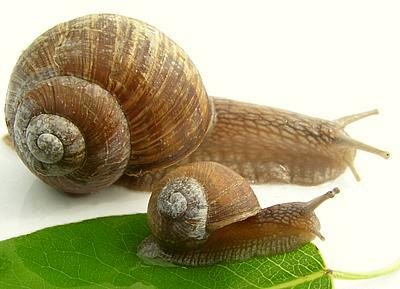

Brown Garden Snail

[Vineyard Snails; Petit Gris (French), Helix aspersa alt
Cantareus aspersus]
These snails have been introduced to various parts of the world by French
immigrants, often with ill conceived dreams of snail farming and always
with disastrous consequences. They have become quite a pest in California
and cost many millions of dollars every year. Only ducks, rats and
Frenchmen seem to want to eat them.
One of the primary "escargot" snails of France, Petit Gris gets up to
1-3/8 inches across the shell. The other two snails eaten by the French
are Gros Gris (H. aspersa var maxima) which grows to 1-3/4
inches and the Bourgogne Snail (H. Pomatia) which gets a little
bigger than 2 inches. Neither of these is a problem in California, we're
stuck with the little ones. Photo ©
i0021.
More on Snails.
Even though I live in California I haven't had a chance to try these
yet. My long term snail eradication efforts have been so successful I
wasn't even able to find an example to photograph and had to buy a photo.
I can see the tears of sympathy forming in people's eyes even as I
write . . .
If you have plenty in your garden and decide to try these snails be
careful. Make sure your neighbors haven't set out toxic snail bait and
that your snails haven't been eating plants sprayed with pesticides.
Before you try to cook snails carefully read the following
instructions and you will then know enough to go out and buy factory
prepared snails.
- First the snails must be purged. there are two common methods. Method 1
is traditional and for wild snails. Method 2 is for farmed snails.
- Keep the snails in a large wooden box with a screen over for 5 to 6
days without food. Then wash them and put them in layers in a container,
each layer with a generous pouring of salt over it. Let them sit in
there foaming in pain for a few hours. Finally rinse them thoroughly in
running water.
- Keep the snails in a wooden frame with screen under and over so they
can't touch the ground or any vegetation. You can feed them some fronds
of dill for added flavor if you wish. Every day for about 3 days hose
them down thoroughly with water.
- Bring plenty of water to a boil and dump in the snails. Cook them for
three minutes, then remove them and cool them.
- Prod the snail out of the shells and remove the digestive organs (some
people leave some part of them in for petit gris). Soak the meats in a
saturated solution of salt and water for 3 hours, then rinse thoroughly.
The snails can be frozen at this point if you wish.
- Thoroughly clean and sterilize the shells.
- Make a sauce, generally butter, garlic and herbs.
- Put some of the sauce in the cleaned shells, then place a snail into
each shell and then more sauce over it. Bake the snails and serve. In
France they have special tiny forks for poking the snails out of their
shells and special tongs for holding the shells as you do so.
The French cannot grow anywhere near as many snails as they eat so they
import them in great quantity from countries more than happy to part with
theirs.
sf_gpbgz 061025 - www.clovegarden.com
©Andrew Grygus - agryg@clovegarden.com - Photos
on this page not otherwise credited © cg1
- Linking to and non-commercial use of this page permitted